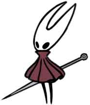
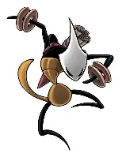
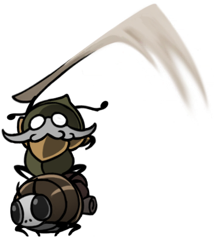
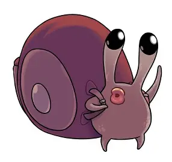

<!DOCTYPE htlm>
<htlm lang="fr">
<head>
    <link rel="stylesheet" href="style.css">
<title>Silksong-lore</title>
</head>
<body>
    <div class="class3">
        <div class="class1">
            Une voyageuse habile qui manie un aiguillon et un fil. Elle abat tout ce qui ce trouve sur son chemin.
            
        </div>
        <div class="class2">
            Féroce et intimidante, Shakra est une guerrière à la recherche de son maître, disparu dans des circonstances étranges. Le clan de Shakra est composé de combattants habiles capables de se débrouiller dans les terres sauvages du royaume. Utile pour Hornet, chaque membre du clan perfectionne également une compétence artisanale, et la maîtrise de la cartographie par Shakra s’avérera inestimable lors de l’aventure de Hornet.
            
        </div>
       
    </div>
    <div class="class6">
     <div class=class4>
           Vieux chevalier vigoureux et leur noble compagnon, travaillant ensemble pour libérer leurs terres de la folie hantée. 
       
        </div>
        <div class="class5">
        Coupez-les avec votre lame ! Coupez-les avec votre esprit mûr ! Coupez-les avec votre cœur d’adulte sauvage !
        – Nuu
         </img>
        </div>
    </div>
    <div class="class7">
        Chevalier à engrenages de Pharloom, autrefois protecteur de ses pèlerins, et maître de la lame de ciseaux.
    
    </div>
    <audio controls>
        <source src="audio.mp3" type="audio/mpeg">
    Your browser does not support the audio element
    </audio>
</body>
</html>